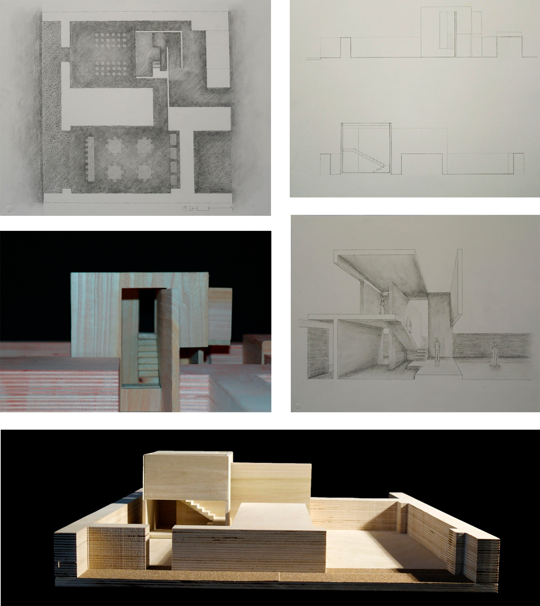

Wedding Pavilion
The final project of my first semester was to design a Wedding Pavilion on Lake Erie that would accomodate a small gathering with about 50 people. The project required a cubic structure to house the ceremony, and additional garden spaces for the guests to view the ceremony, and for the reception. The goal of this project was to create architectural space that enhanced its program by considering issues of choreography, integration of natural and constructed conditions, and site awareness.
